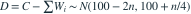
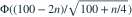

桥的承载力  ，各车重量
，各车重量  。各车相互独立，且均与C独立。要求
。各车相互独立，且均与C独立。要求  。已知
。已知  ，允许的最大整数n为？
，允许的最大整数n为？
，各车重量 。各车相互独立，且均与C独立。要求 。已知 ，允许的最大整数n为？- A

- B
- C

- D

我已思考，展开答案与解析
正确答案：A
- 差

。 - 不塌陷概率为

，该标准化值随非负n递减。 - n=37时该值约2.4876，n=38时约2.2935。前者达到2.32635，后者没有，所以最大为37。
易错提醒桥本身也有方差；独立随机量作差时方差仍相加。
考后回忆 · 条件重建 · 回忆2、13；数值为重建设定
依据考试回忆重建；数字、选项和必要条件为补充设定，非原题。